TUGAS PERORANGAN/INDIVIDU
LAPORAN JOBSHEET 4
Displaying Data And Handling Events
Disusun Sebagai:
MATA KULIAH: PEMROGRAMAN WEB LANJUT
Oleh:
Moh. Khoirul Arifin/1741720051
TI-2B

PROGRAM STUDI D-IV TEKNIK INFORMATIKA
JURUSAN TEKNOLOGI INFORMASI
POLITEKNIK NEGERI MALANG
2019
Praktikum – Bagian 1: Component Basic
Buka file course.component.ts tambahkan code
Buka file course.component.html tambahkan code
Soal 1 Hasil 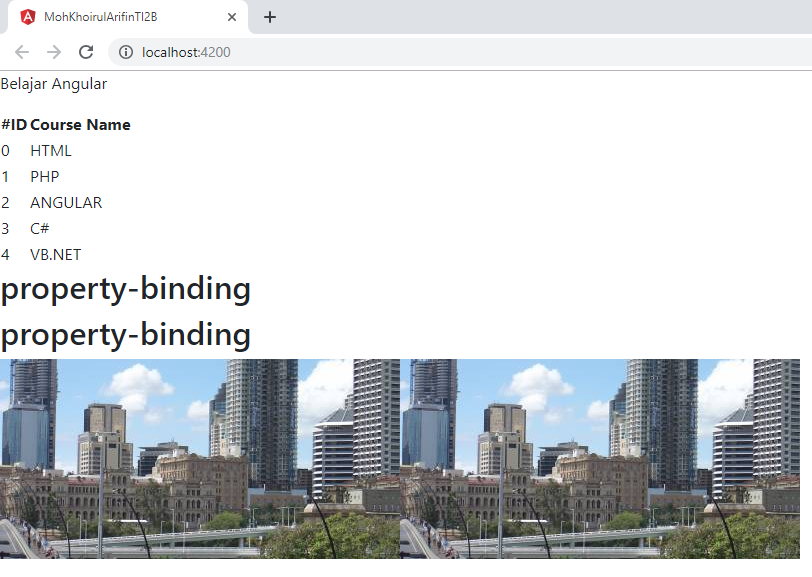
Praktikum – Bagian 2: Attribute Binding
Buka file courses.component.ts tambahkan property colspan dibawah line imageUrl.
Buka file courses.component.html dan tambahkan Code
Buka browser kemudian lakukan inspect maka akan muncul error
Tambahkan attr pada colspan
Soal 2 Hasil 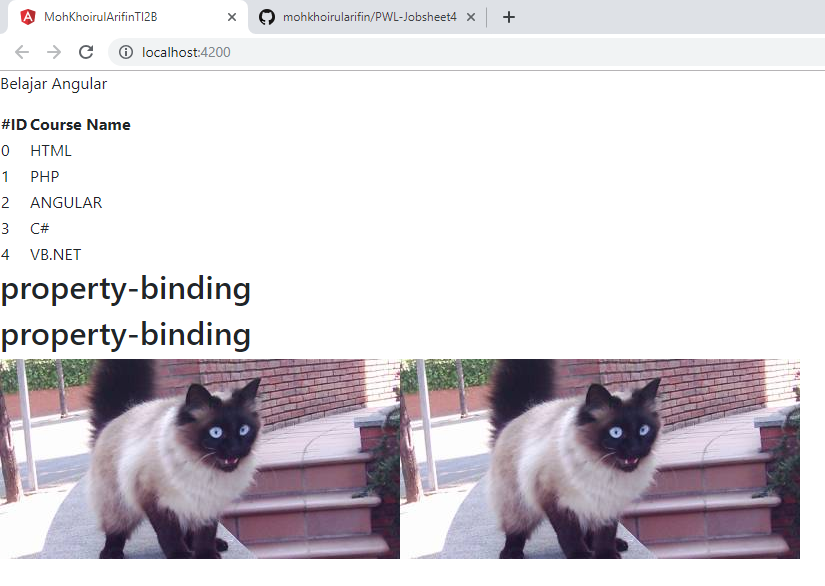
Selanjutnya tambahkan button pada courses.component.html
Soal 3 Hasil 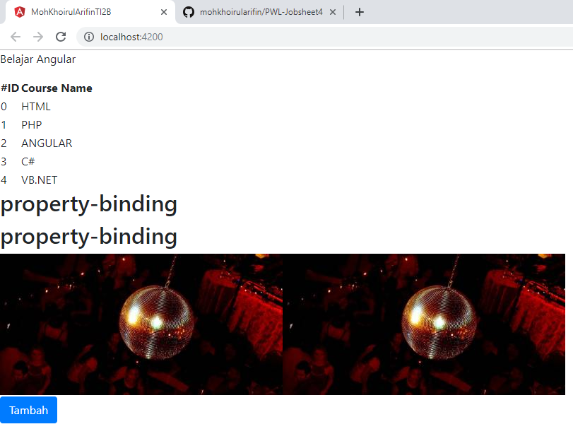
Praktikum – Bagian 3: Class Binding
Buka file courses.component.ts dan tambahkan property isActive = true setelah line colspan = 2;
Buka file courses.component.html lalu tambahkan class binding
Rubah isActive menjadi false dan inspect element maka kondisi active akan hilang
Praktikum – Bagian 4: Style Binding
Buka file courses.component.html kemudian tambahkan code
Soal 4 Hasil 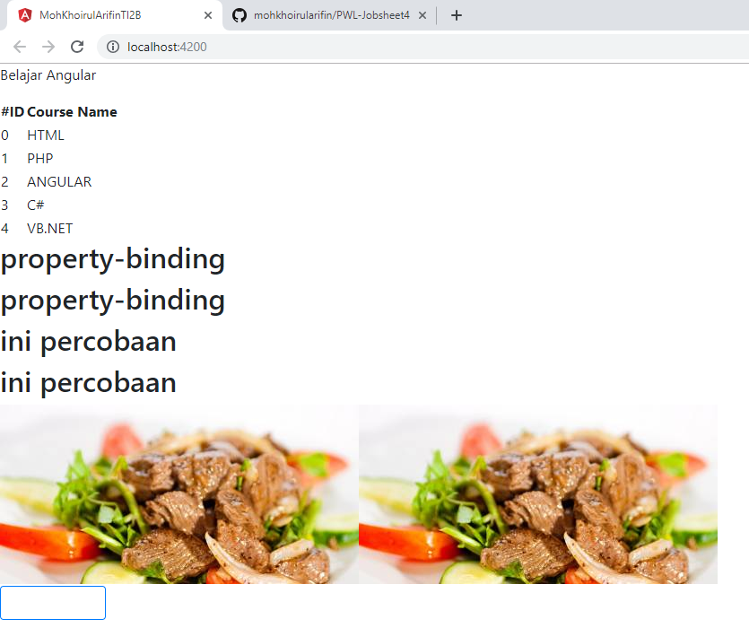
Praktikum – Bagian 5: Event Binding
Buka file course.component.ts dan buatlah method dengan nama onSave()
Buka file courses.component.html dan tambahkan event click
Jalankan localhost:4200 dan lakukan inspect element. Jika button di click maka pada console akan muncul keterangan button sudah di klik 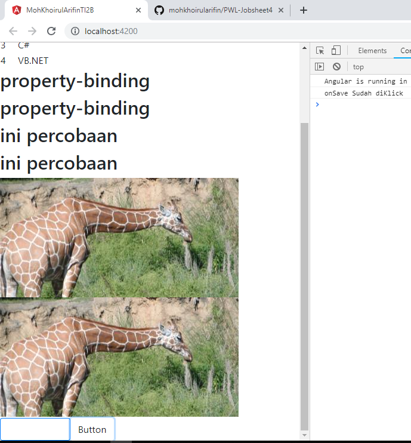
Buka file courses.component.ts tambahkan parameter $event
Tambahkan juga pada courses.component.html
Soal 5 Hasil 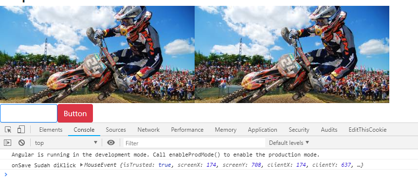
Buatlah method onDivClick() pada courses.component.ts
Tambahkan div dan event binding pada div elemen
Soal 6 Hasil 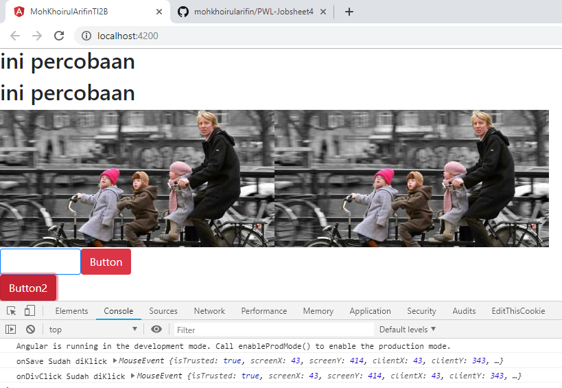
Untuk mengatasi event bubbling maka tambahkan $event.stopPropagation pada courses.component.ts
Soal 7 Hasil 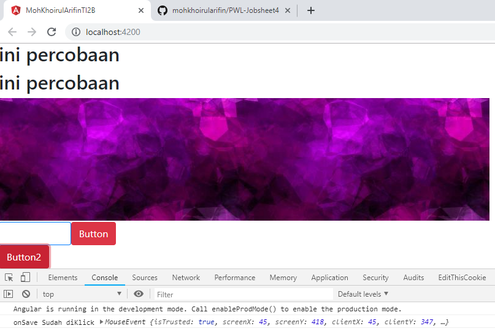
Praktikum – Bagian 6: Event Filtering
Buat inputan pada courses.component.html
Tambahkan method onKeyUp
Soal 8 Jalankan localhost, kemudian isikan sesuatu pada kolom inputan yang sudah dibuat dan lakukan inspect elemen. Perhatikan pada console Hasil 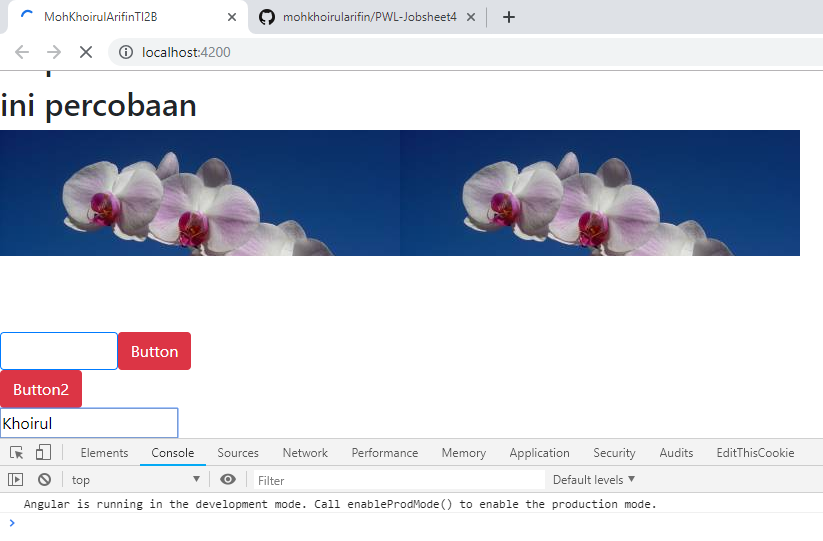
Soal 9 Kemudian bandingkan apabila button enter ditekan Hasil 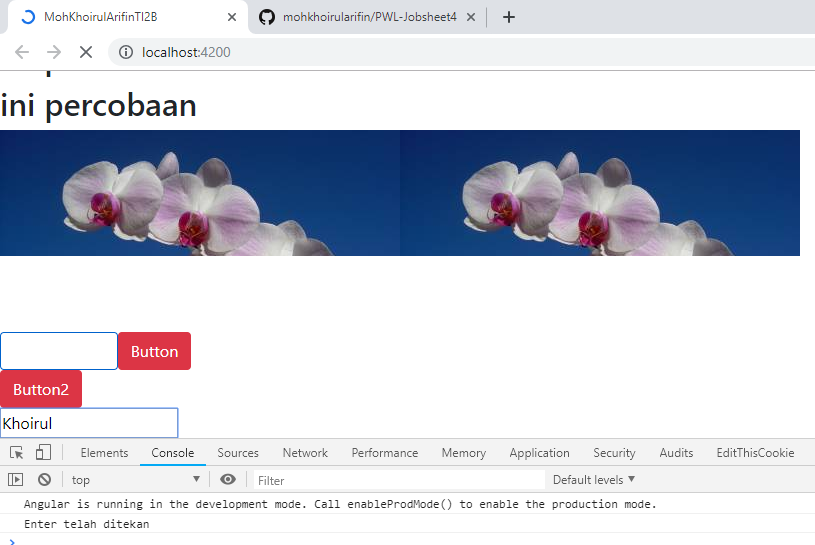
Praktikum – Bagian 7: Template Variable
Tambahkan variabel #nama pada courses.component.html
Tambahkan parameter nama pada method onKeyUp
Soal 10 Perhatikan apa yang terjadi ketika kita beri inputan? Cek pada inspect element dan lihat di console. Hasil 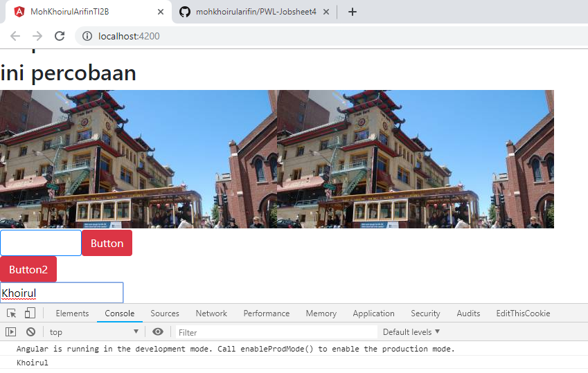
Praktikum – Bagian 8: Two Way Binding
Buat property baru dengan nama kalian masing-masing dan rubah parameter pada log
Tambahkan parameter nama pada method onKeyUp
Soal 11 Perhatikan apa yang terjadi pada kolom inputan? Cek pada inspect element dan lihat di console. Hasil 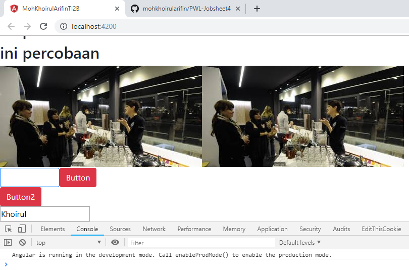
Buka app.module.ts dan tambahkan formmodule
Buka course.component.html, modifikasi code
Soal 12 Perhatikan apa yang terjadi pada kolom inputan? Cek pada inspect element dan lihat di console. Hasil 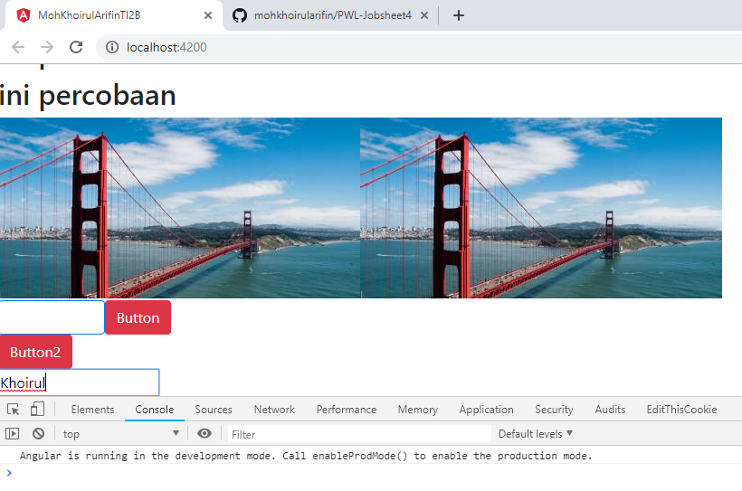